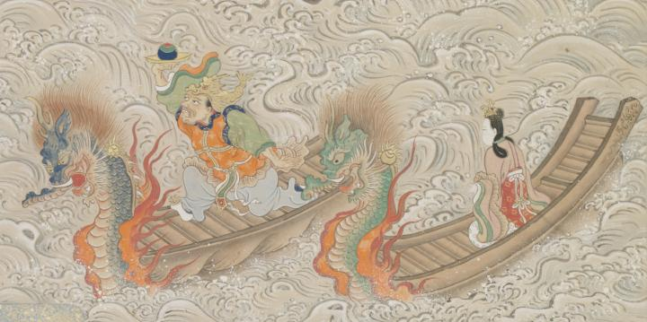

龍女と龍王。龍女は緑の竜頭鷁首に乗り、唐風の衣装で冠を着けている。龍王は青の竜頭鷁首に乗り、唐風の衣装で頭に龍の冠を着け、右手で皿に乗せた宝珠を掲げている。
著作者：英一蝶／出典：親書誌：U426_nichibunken_0094：田原藤太秀郷；タワラトウタヒデサト／日付：2008／資源識別子：U426_nichibunken_0094_0007_0000
Copyright (c)2010- International Research Center for Japanese Studies, Kyoto, Japan. All rights reserved.